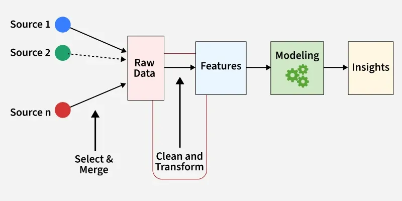
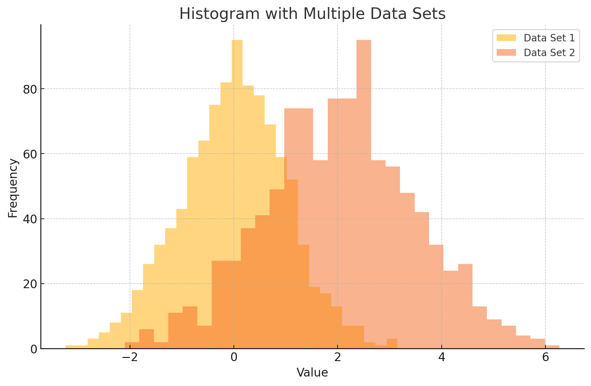
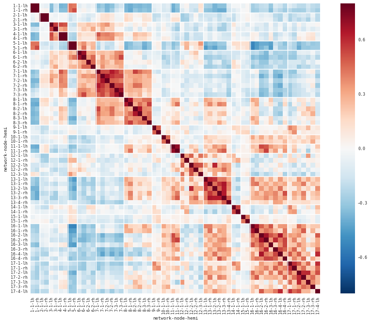
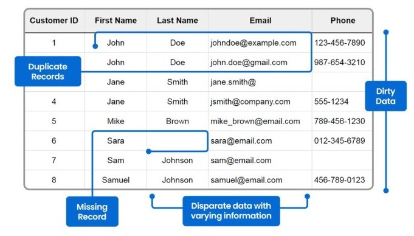
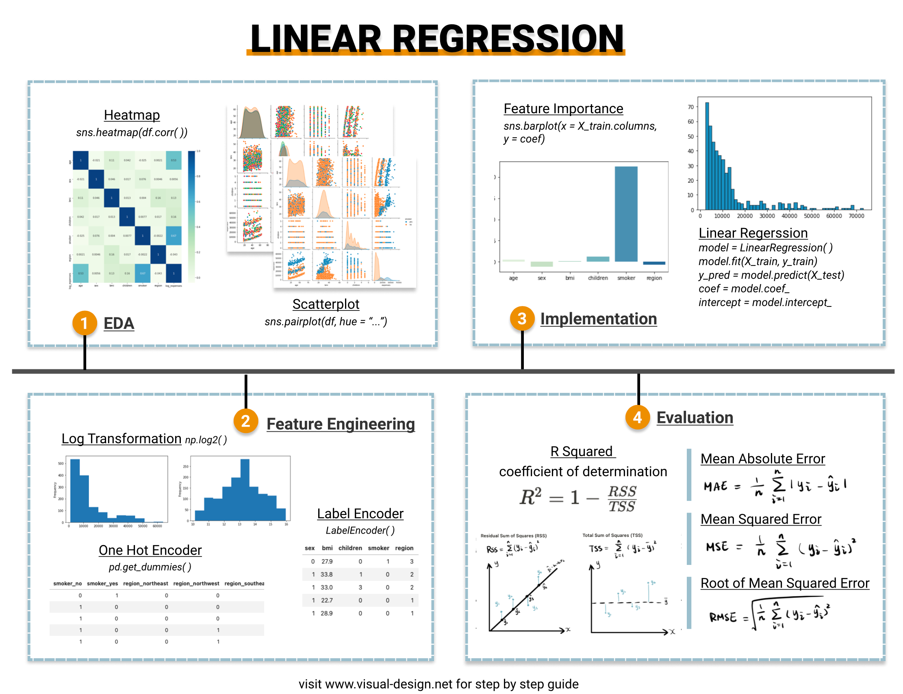

Big Picture: The Data Analysis Pipeline
This lecture is built around a simple but realistic idea: most machine learning projects do not begin with a model. They begin with understanding, cleaning, and preparing data.

EDA
Cleaning
Scaling
Modeling
This lecture also connects directly with your project mindset: before you train anything, you need to know what your dataset contains, whether it has missing or suspicious values, how variables are distributed, and whether the data need transformation.
Exploratory Data Analysis (EDA)
EDA is the first serious contact with a dataset. Its goal is to understand structure, distributions, missing values, correlations, and possible issues before moving forward.
What to inspect first
df.info()for structure, dtypes, and non-null countsdf.describe()for summary statisticsdf.isnull().sum()for missing valuesdf.nunique()for unique values
What to inspect next
- distribution of numerical variables
- categorical distributions
- grouped summaries with
groupby() - correlations between variables


Data Cleaning
Real datasets are often messy. A file may contain metadata before the real table begins, broken rows, strange delimiters, or even fake missing values encoded as numbers.
| Common issue | Typical fix |
|---|---|
| Metadata before the table | Use skiprows or read raw text first |
| Broken rows split across lines | Rebuild lines programmatically before loading |
| Inconsistent delimiters | Standardize separators during parsing |
| Comma decimal separators | Use the proper decimal setting when reading |
| Fake missing values such as 9999 | Detect and replace them intentionally |

This is one of the most practical parts of the lecture: instead of assuming every CSV is clean, it shows how to reason about data files like an investigator. If something looks suspicious, it probably deserves inspection.
Feature Scaling
Once the data are loaded and cleaned, the next question is whether feature values live on very different scales. If they do, some models and optimization procedures can behave poorly.
Compress values into a specific interval such as 0 to 1.
Center data at mean 0 with standard deviation 1.
Scale observations according to a chosen norm such as L1 or L2.
In the lecture, this step is introduced through scikit-learn’s transformation workflow: fit learns the transformation parameters from the data, and transform applies them.
Linear Regression: Putting Everything Together
The final step of the lecture is to use the prepared dataset to build a first real model: linear regression.
Three implementation views
- from scratch
- with scikit-learn’s analytical solution
- with a self-implemented gradient descent
Why this matters
The lecture is not only about obtaining predictions. It is about seeing how cleaned and transformed data finally enter a modeling step in a coherent workflow.

Study Material
Short outline of the hands-on session covering the data analysis pipeline, from EDA to linear regression.
View PDF →Especially useful here, because most of the value of this lecture is in the live explanations, the plotting walkthrough, and the practical comments around real data analysis.
View PDF →Because this is a full hands-on lecture, the best way to study it is with the lecture page open next to the notebook material, so you can connect the workflow with the actual code.
Quick Review Quiz
1. What does the “80/20 rule” mean in machine learning practice?
It means that a large share of project time often goes into data pre-processing and cleaning, while a smaller share goes into the actual modeling step.
2. Why is df.info() a useful first step in EDA?
Because it quickly shows the dataset structure, non-null counts, data types, and memory usage, helping you catch type or missing-value issues early.
3. What is the difference between a Figure and an Axis in Matplotlib?
A Figure is the overall plotting canvas, while an Axis is the specific plotting area where data, labels, and ticks are drawn.
4. Why is a histogram different from a bar chart?
A histogram shows the distribution of a continuous variable through bins, while a bar chart compares discrete categories.
5. Why can pie charts be misleading?
Because human perception is not especially good at accurately comparing slice angles and areas, so proportions can be harder to judge than in a bar chart.
6. What does a correlation heatmap help you identify?
It helps identify strong or weak linear relationships between numerical variables in a visually intuitive way.
7. Why is data cleaning often necessary before modeling?
Because real data may contain missing values, formatting problems, corrupted rows, or inconsistent separators that can break analysis or distort results.
8. What is the purpose of feature scaling?
It makes variables more comparable numerically and can help optimization-based models work more effectively when features are on very different scales.
9. What is the practical difference between fit and transform in scikit-learn?
fit learns the transformation parameters from the data, while transform applies those learned parameters to produce the transformed data.
10. Why is linear regression presented only after EDA, cleaning, and scaling?
Because the lecture wants to show that modeling should come after understanding and preparing the data, not before.